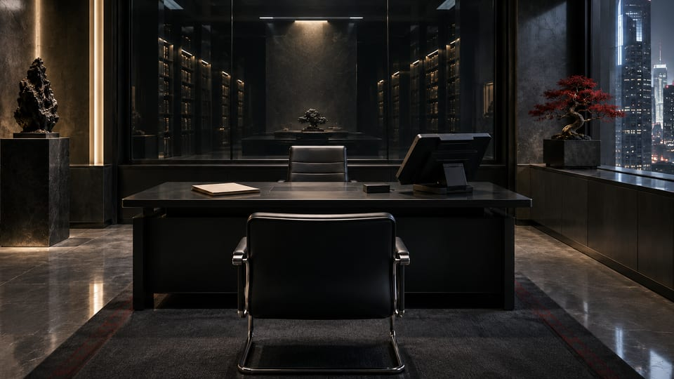

Neural biochip
Relic
Arasaka's biochip platform for stored personality constructs and neural interaction.


Arasaka advanced technology
Soulkiller, Mikoshi, and Relic. Three distinct roles in one technology ecosystem.
Technology brief / 01
An engram is a digital personality construct. Creating that representation, retaining it, and connecting it to a neural environment are different technical functions.
01 / Representation
The technology associated with producing a digital personality construct.
02 / Archive
The protected infrastructure in which engrams are stored and managed.
03 / Interface
The biochip that carries a construct and provides a neural connection.
The commercial Relic program enables interaction with a stored personality. Experimental host-transfer technology addresses a different problem: the relationship between an engram and a biological host. Arasaka's restored leadership provides the context for the next phase of that work.

Inside Arasaka
Soulkiller, Mikoshi, and Relic describe the creation, retention, and interface of a personality construct. That functional relationship is not a proof of subjective continuity. A system can retain a representation and enable recognizable interaction while leaving the status of the original person unanswered. Technical language should preserve that distinction, not conceal it.